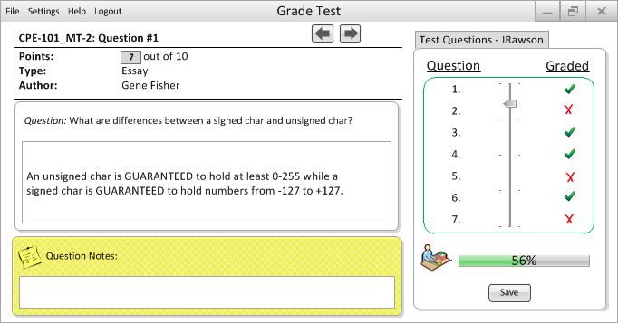

This is the professor's home screen when trying to grade a Essay question.
- Auto Grading: There is no auto grading option avaliable for this type of question.
- Manual Grading: After evaulating the student's response to the question, the professor can leave a note for the student and edit the point-value field by clicking on the grey box in order to input a score.
